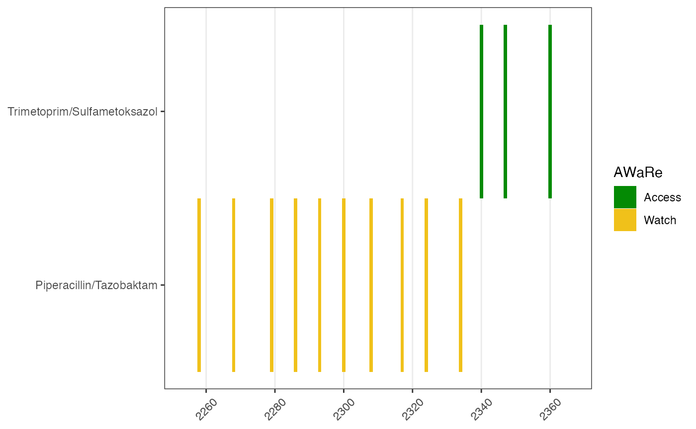
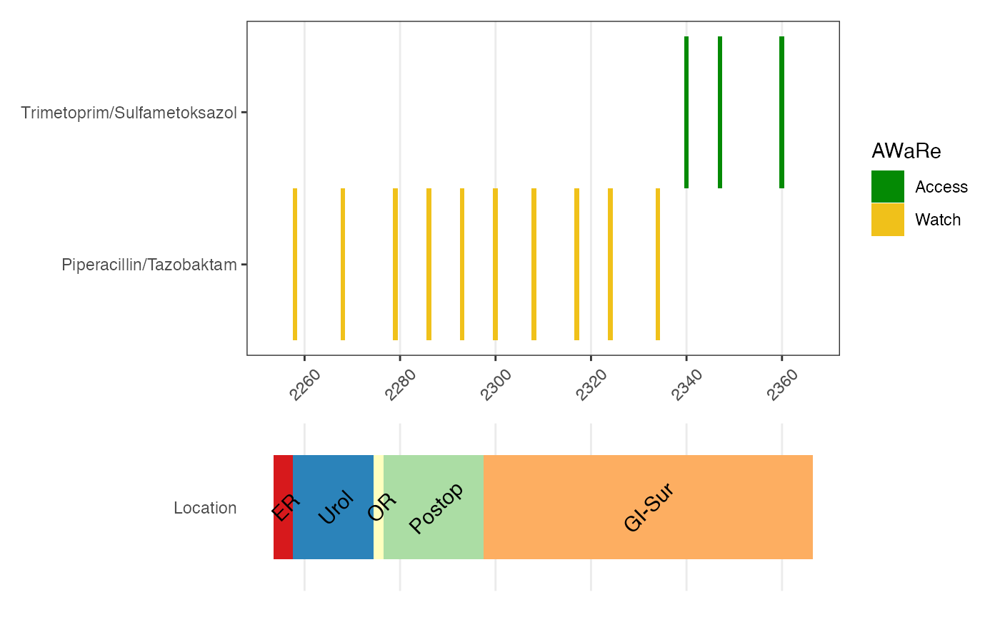
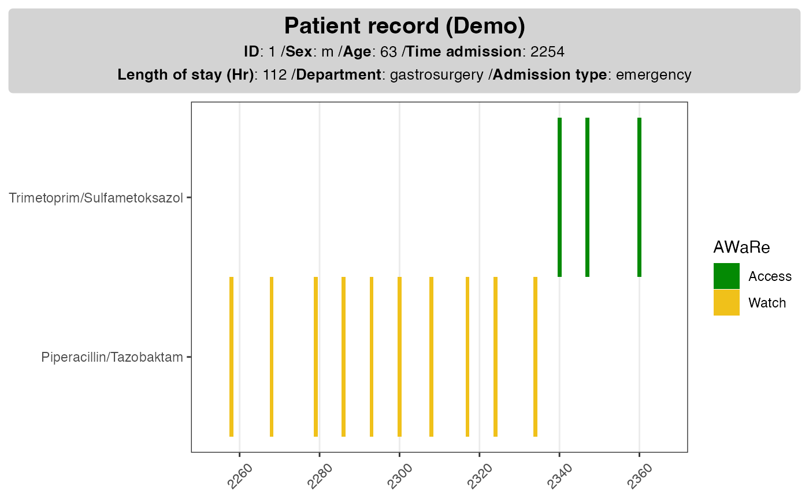
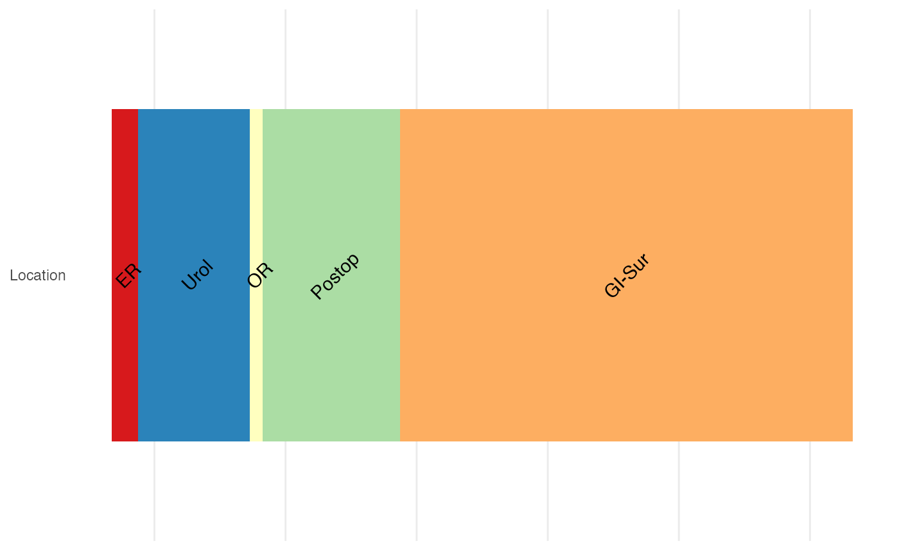
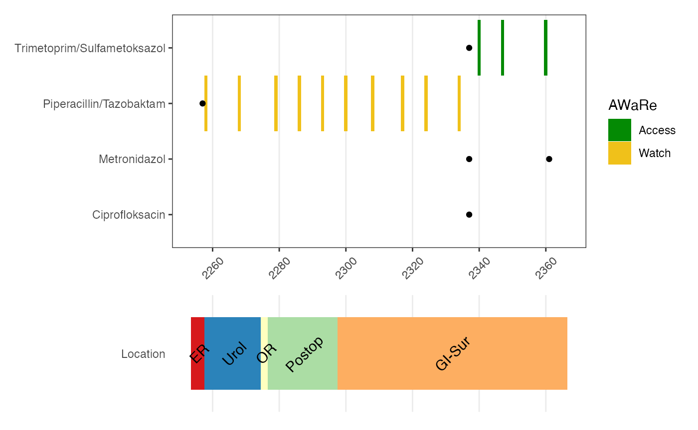

Electronic Health Records (EHR) data are patient records collected in healthcare facilities such as hospitals and clinics. Examples of hospital EHR data include demographics, admission information as well as treatments (drugs, procedures). This type of data is known to be messy and prone to error.
The ggehr (read: gg E-H-R) package helps you make
visualize EHR data, so that you can
- have an overview of the mixed type information related to a patient;
- identify the errors in data recording.
In principle, all data generated in real-life contain time stamps; yet in practice we tend to omit the time information. When it comes EHR data it is essential that we keep the time stamps, as they provide valuable information on what treatments and procedures have the patients been going through. Broadly speaking,
- temporal data: treatments (drug, procedures), locations
- static data: demographics, admission information
As EHR data are usually scattered across different tables, it is beneficial to collect them altogether and visualize in one or two graphs.
Antibiotics usage over time
In this section we include an example of a typical use case for
ggehr: antibiotics usage throughout the patient stay at the
hospital.
We load some data from a fictional patient. The data used is fictional, however illustrates the complexity of data of this kind quite well. To learn more about EHR data used in the demonstration, please read this document: Types of EHR data.
We include the following data types:
-
ab_use: antibiotics use over time -
ab_prescription: antibiotics prescription information -
demographics: demographics, type of admission, department information -
location: location where the patient had been to in the hospital. This can serve as a proxy for any surgical operations, intensive care.
In the future we can also add the types of procedures (such as catheters), physiological scores etc if they become available.
ab_use <- ggehr::ab_use
ab_prescription <- ggehr::ab_prescription
demographics <- ggehr::demographics
loc <- ggehr::location
# the drug_df should have standard names
ab_use <- dplyr::rename(ab_use, label = ab_name)
ab_use <- dplyr::rename(ab_use, method = ab_method)
# we focus on patient ID == 1
id <- 1
dpatient_demog <- filter(demographics, ID == id)
dpatient_drug <- filter(ab_use, ID == id)
dpatient_presc <- filter(ab_prescription, ID == id)
dpatient_loc <- filter(loc, ID == id)Antibiotics AWaRe
We include metadata on the antibiotics in the package, for the purpose of categorizing drug types. At the moment we use WHO AWaRe categorization for antibiotics:
- A: access, use freely;
- Wa: watch, use with caution;
- Re: reserve, use as last-resort cases.
We shall use the category to color the antibiotics.
# ab_ahus provides a narrowed down list (with norwegian language)
abinfo <- ggehr::ab_ahus
abinfo[c(1,4,5),] # print out some examples
#> Antibiotic Category Norsk_AHUS color_code
#> <char> <char> <char> <char>
#> 1: Amoxicillin Access Amoksicillin green
#> 2: Azithromycin Watch Azitromycin yellow
#> 3: Aztreonam Reserve Aztreonam redGet the complete WHO list as a dataset with
ggehr::ab_who,
ggehr::ab_who[1:3,]
#> Antibiotic Class ATC code
#> <char> <char> <char>
#> 1: Amikacin Aminoglycosides J01GB06
#> 2: Amoxicillin Penicillins J01CA04
#> 3: Amoxicillin/clavulanic-acid Beta-lactam/beta-lactamase-inhibitor J01CR02
#> Category Listed on EML/EMLc 2023 color_code
#> <char> <char> <char>
#> 1: Access Yes green
#> 2: Access Yes green
#> 3: Access Yes greenPlot drug use
Each drug use has a time stamp. We would like to have visualize the uses over the patient’s admission and discharge time, which is included in the demographics table.
# add drug information
dpatient_drug <- left_join(dpatient_drug, abinfo,
join_by(label == Norsk_AHUS))
# this is the step to make event
# should use admin and discharge times
tadmin <- dpatient_demog$t0
tdischarge <- tadmin + dpatient_demog$los
# drug use ----#
d <- make_event_drug_use(dpatient_drug,
tmin = tadmin,
tmax = tdischarge)
#> Joining with `by = join_by(time, label)`
p1 <- plot_drug_use(data_drug_use = d)
p1
Prescription time and unused drugs
It is convenient to add the times for antibiotics prescription on the drug use figure. There are a few reasons why this is useful:
- sometimes the prescription form is filled by different staff, resulting inconsistency in data registration in drug types, time of prescription;
- drug prescription form could contain reasons as why this drug is prescribed, for example, if it’s for a surgery prophylactic (prevention) or sepsis infection treatment; if it’s for an infection acquired in the community or at the hospital.
# drug prescription
p1p <- plot_drug_prescribe(data_prescribe = dpatient_presc,
plot_obj = p1)
p1p
In this figure it is clear to see that two drugs are unused even though prescribed; and recording times are sensible - prescription before use.
Interactive prescription
Additional information for prescription can be added interactively.
p1i <- plot_drug_prescribe_interactive(data_prescribe = dpatient_presc,
plot_obj = p1p)
p1iAdd static information card
It is often useful to add background information for the patient so that we have a better idea on the type of admission, length of stay as well as demographics. As these information are without time stamps, they can be added as a card next to the drug use plot.
# demographics ----#
dpatient_demoinfo <- make_demographic_info(demo_df = dpatient_demog)
dpatient_demoinfo
#> [1] "<b>Patient record (Demo)</b><br><span style = 'font-size:10pt'>**ID**: 1 /**Sex**: m /**Age**: 63 /**Time admission**: 2254<br>**Length of stay (Hr)**: 112 /**Department**: gastrosurgery /**Admission type**: emergency</span>"The function make_demographic_info() extract and parses
the relevant information so that it can be added in the existing
plot.
p1pp <- plot_info_demographic(info_text = dpatient_demoinfo,
plot_obj = p1)
p1pp 
Location
It can be helpful to know where the patient have been to in the hospital, both for infection control and as a proxy for events such as surgery and intensive care.
# location ----#
dloc <- make_location(data_location = dpatient_loc,
tadmin = dpatient_demog$t0,
los = dpatient_demog$los)
#> Joining with `by = join_by(location_code)`
#> Joining with `by = join_by(location_code)`
p2 <- plot_location(loc_obj = dloc, keep_time = F)
p2
Put together multiple plots
library(patchwork)
# p1 + p2 + plot_layout(ncol = 1, heights = 2:1)
p1p + p2 + plot_layout(ncol = 1, heights = 2:1)
p1pp + p2 + plot_layout(ncol = 1, heights = 2:1)